Bem-vindo ao meu portfólio de projetos!
Esportista. Sou mais reservado (o que não me impede de trabalhar em equipe). Acredito que resiliência e certa inteligência emocial são habilidades que me acompanham (e que acabam ajudando no desenvolvimento de software) Gosto de programação como um tempo, mas a parte Desktop, mesmo em desuso, ainda brilha os olhos.
A ideia era substituir um SaaS que a empresa contratou que fornece “relatórios de licitações abertas na área de interesse da empresa. Meu programa consulta as APIs do governo (no print, só uma) que são responsáveis por expor essas informações. Este projeto é o Mínimo Produto Viável.
O programa foi feito em C# com .net 8.
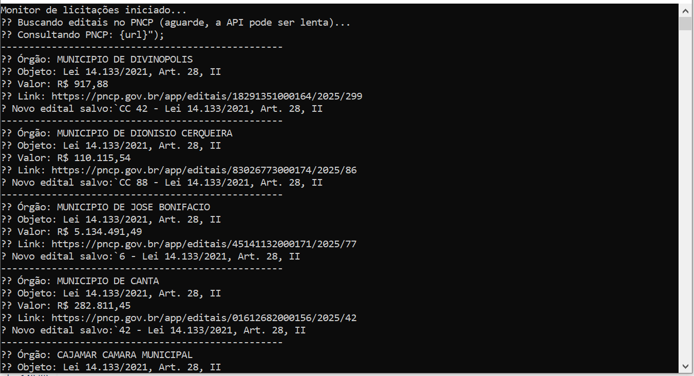
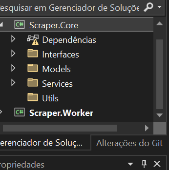
Programa que consulta uma API para calcular a distância entre determinado cliente e nossas filiais para ajudar na tomada de decisão do time comercial sobre qual filial tem preferência pelo atendimento.
Essa versão inicial foi feita usando Python. A seguir, veremos a versão que utiliza C#.
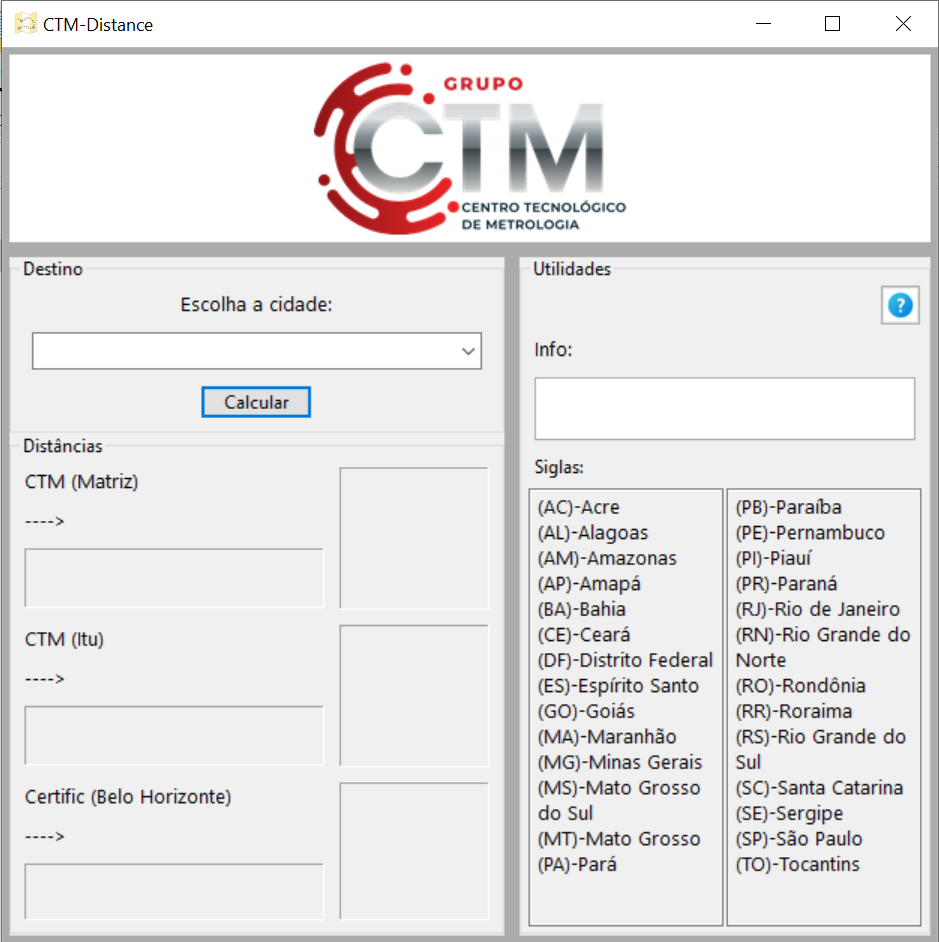
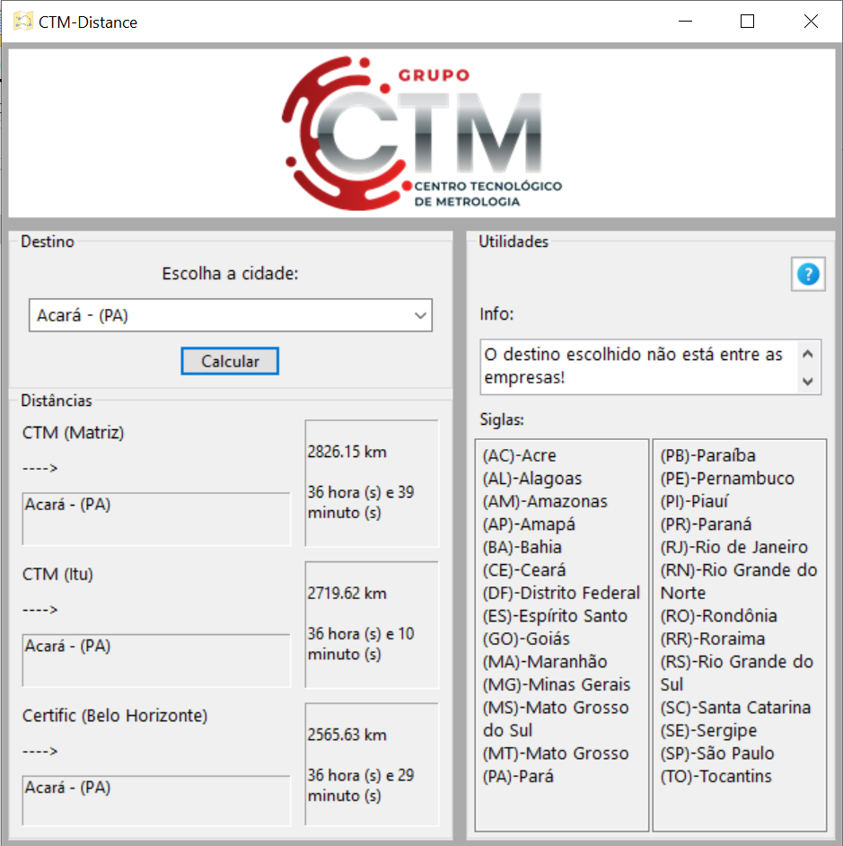
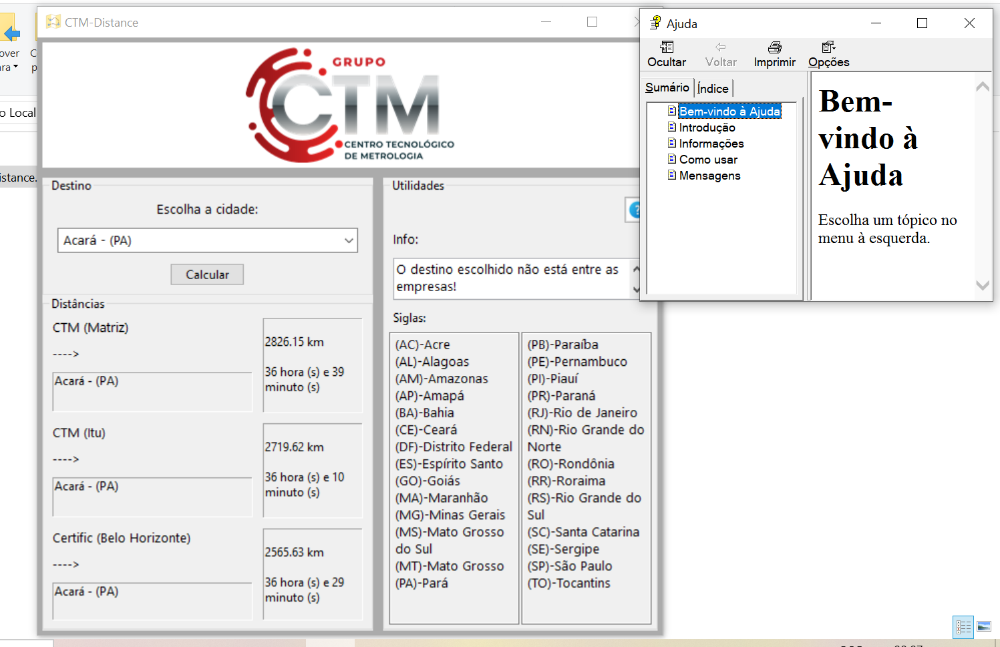
O programa foi feito em C# (WPF) com .net 8.
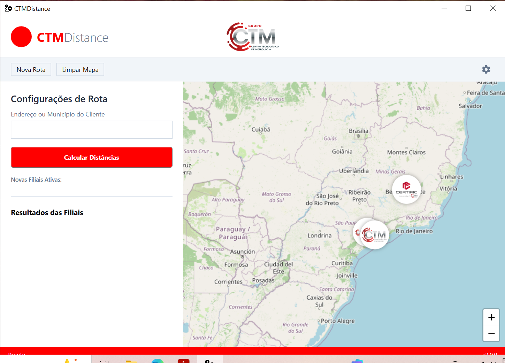
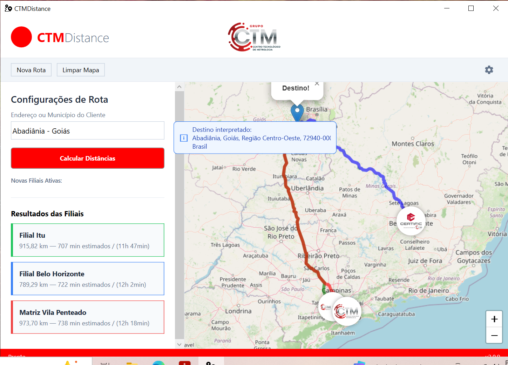
O programa foi feito em Java. Projeto Maven no NetBeans.
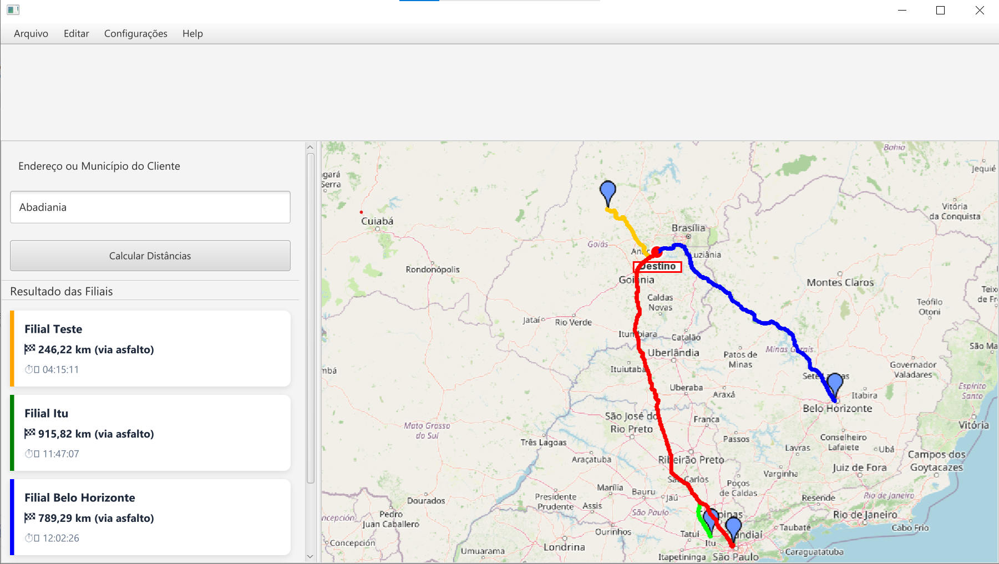
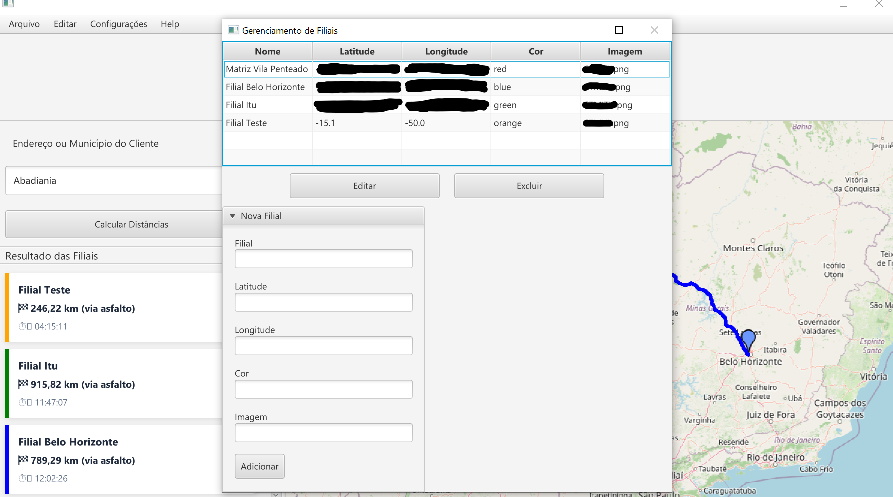
Um pouco mais atual. Na verdade, o projeto é uma página WEB com algumas funcionalidades.
O programa foi feito em C# (Blazor) .net 8.
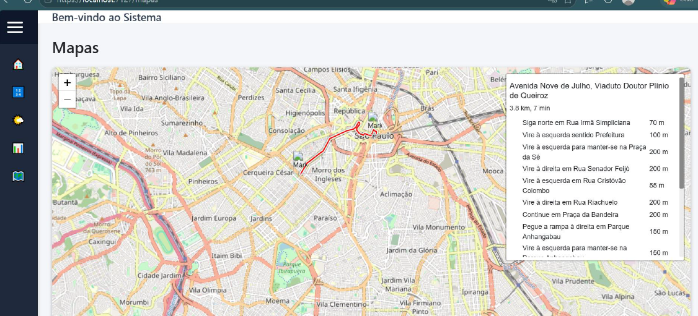
Fazia parte de algo maior que atualmente está parado. Esse software testa a comunição do computador com o equipamento Multicalibrador 5080.
O programa foi feito em Python.
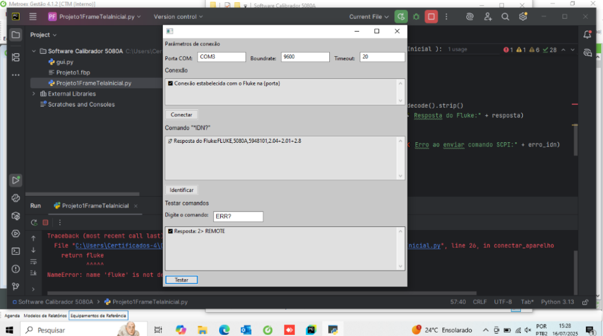
Primeiro projeto fora da faculdade, foi um marco.
O programa foi feito em Python utilizando exaustivamente WxWidgets.
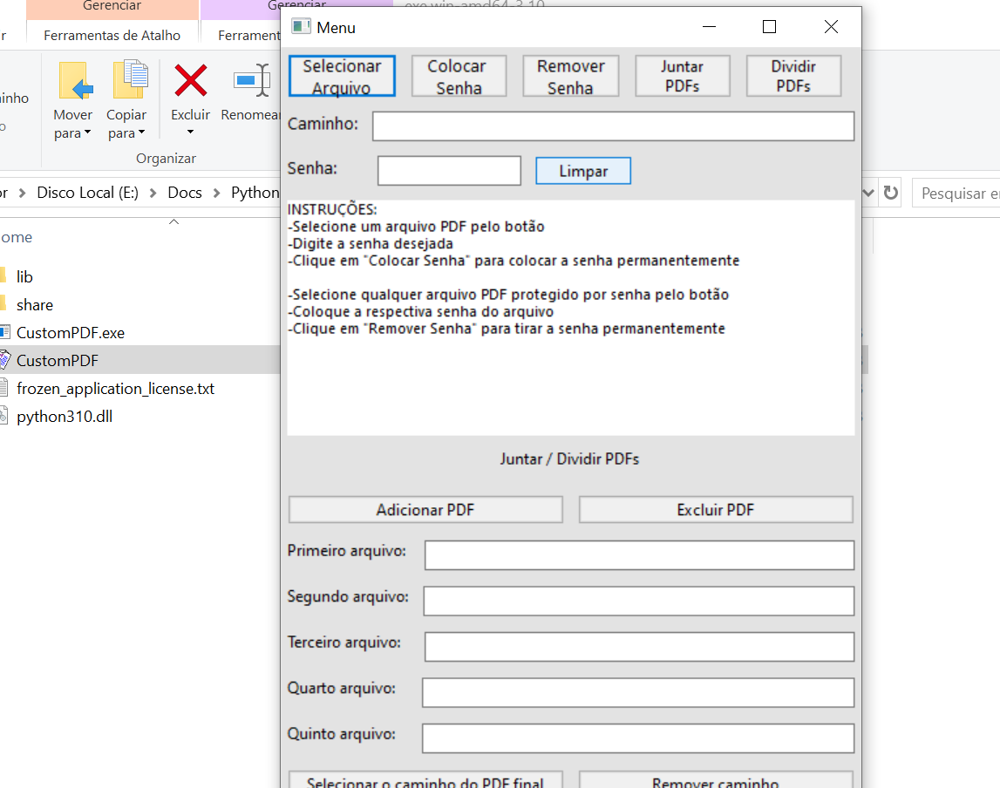
Evolução do CustomPDF. Me fez entender o poder visual da plataforma .NET.
O programa foi feito em C# (WPF).
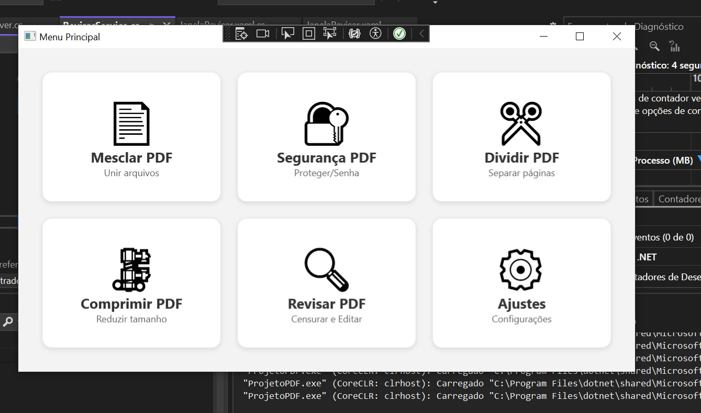
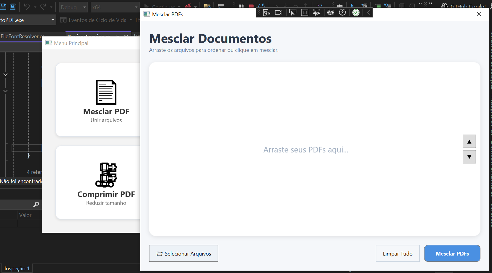
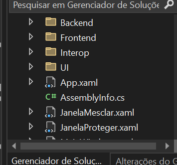
Observação: O desenvolvimento dos projetos foi acelerado com a ajuda das IAs. Nada de ferramentas pagas, somente Gemini e Copilot foram utilizadas. Acredito que dessa maneira evito o copiar e colar cego e também vou progredindo aos poucos (melhorando as classes, entendendo as estruturas de pastas (MVVM para WPF por exemplo), implementando responsabilidade única, padrões de projetos como factory...).